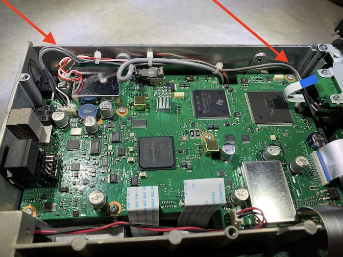

Note
In Limited Beta. Product launch targeted Q2 ‘23. Everything is subject to change.
Installation¶
Before you begin¶
Installation of the DE7301 requires about an hour of time in an ESD safe environment. Before you begin:
Read through the installation documentation entirely
Locate a Multimeter with a ‘Continuity Beep’ function.
Locate a JIS (or Phillips) screwdriver, long enough to set a screw in a 10mm deep hole
Locate masking tape (or other low tack tape)
Disclaimer, Warning¶
By installing this kit, you are taking a risk that you could permanently damage your radio.
Reasonable attempts have been made to ensure these installation instructions are accurate. It is up to you to follow them correctly, and to ensure you perform the continuity test before powering up your radio.
Warning
If the instructions don’t look right, don’t make sense, or your radio looks different, STOP!
Contact support or join the discord. A little time spent asking questions is worth your time.
Remove Bottom Cover¶
Place your radio on the desk, so that the display is “upside down”. Do not move the orentiation of the radio unless instructed to.
Remove the 6 screws on the bottom of the case
{kind=link}
Remove 8 screws on the sides of the case (each size has 4 screws)
{kind=link}
{kind=link}
Disconnect Front Panel¶
Locate the Front Panel SD Card Flat Flex Cable
{kind=link}
Place your index finger on the underside of the rigid blue section of the flex, and pinch with your thumb on top. In a smooth firm motion, unplug the flex cable from the front panel
{kind=link}
Towards the back of the radio, un-tuck the front panel audio cable from behind the shield can.
{kind=link}
Using a screwdriver, gently work the two Front Panel audio cables from under the Mainboard.
{kind=link}
The freed audio cables should look similar to the following:
{kind=link}
Locate the primary display flex cable.
{kind=link}
Place your index finger along the underside of the flex cable, and pinch with your thumb.
In a smooth firm motion, pulling straight up, unplug the flex cable from the main board.
Warning
These connectors have high friction, and will suddenly release.
Use caution to not rip cable away after release.
Do not pull the cable at an angle; pull straight up. Pulling at an angle may rip the connector from the display
Remove rear fan¶
Locate and unplug the rear fan power cable
{kind=link}
Remove the four fasteners retaining the fan to the rear of the radio, then remove the fan
{kind=link}
Remove top cover¶
Turn the radio over, ensuring to not damage any loose flat flex cables when changing orientation.
Remove the top cover of the IC7300 by removing all of the screws on the top case.
Using a piece of low tack tape (Such as masking tape), tape the speaker into place so it does not fall when the radio orientation is later changed.
{kind=link}
PTRX-7300 Note¶
If you have a radio with a PTRX-7300 installed, ensure you secure the mod with tape as well. A community member suggested this configuration.
{kind=link}
Remove front panel¶
Remove the two screws on the top of the radio retaining the front panel

Rotate the radio onto it’s side. The VFO knob should be down, and the radio main board should be facing you.
Remove the two remaining screws that retain the front panel

Note
At this point, the front panel is no longer secured to the radio body. When moving the radio, support the front panel with your hands. Failure to do so may damage cabling from the radio body to the front panel.
Move the front panel by tilting away from you. Once tiled, slide backwards away from the rear engagement pins, then bring towards your body.
{kind=link}
Locate the front panel audio connector by following the remaining two cables, and unplug
{kind=link}
Replace Flat Flex Cables¶
With the front panel now completely detached from the radio body, place the panel face down on the desk. Locate the primary flex cable. and ensure it is on the side of the front panel closest to you.
{kind=link}
With one hand, hold the front panel frame.
With the other, place your index finger along the underside of the flex cable, and pinch with your thumb.
In a smooth firm motion, pulling straight up, unplug the flex cable from the front panel.
Warning
Do not pull the cable at an angle; pull straight up. Pulling at an angle may rip the connector from the display
In the parts kit, locate the longer flat flex cable. Pinching one end, insert it into the front panel connector with the shiny copper contacts facing towards your body. Push gently until you feel the connector bottom out.
Once installed, perform an inspection. Correct insertion of this cable is critical.
- The copper contacts are facing towards you.
If they are not, the cable is installed backwards
- The cable comes in perpendicular to the connector (Not at an angle).
If it is not, the cable was inserted crooked
- Ensure that the length of copper visible on each contact is of equal length.
If they are not, the cable may not be fully seated or may be installed at an angle.
Apply light upward pressure on the flex cable, ensuring it does not dislodge the flex
{kind=link}
Orient the main radio body so that the front of the radio is facing you. Locate the primary display flex connector
{kind=link}
In the parts kit, locate the shorter flat flex cable. Pinching one end, insert it into the main radio body connector with the shiny copper contacts facing towards your body. Push gently until you feel the connector bottom out.
Once installed, perform an inspection. Correct insertion of this cable is critical.
- The copper contacts are facing towards you.
If they are not, the cable is installed backwards
- The cable comes in perpendicular to the connector (Not at an angle).
If it is not, the cable was inserted crooked
- Ensure that the length of copper visible on each contact is of equal length.
If they are not, the cable may not be fully seated or may be installed at an angle.
Apply light upward pressure on the flex cable, ensuring it does not dislodge the flex
{kind=link}
Install Retaining Bracket¶
Locate and remove screws labeled 2, 3, 4 on the Main board.
{kind=link}
Line up the bracket with the screw holes, and reinstall screw 2, 3, 4. Do not install the DE7301 at this time. The SD Card Flex cable should be entirely above (not below) the bracket.
Warning
Do not over tighten screws, as the plastic may yield. Snug tight is appropriate.
{kind=link}
Undisassemble¶
Partially re-assemble the radio, leaving the bottom case off
Reinstall the Front Panel audio cable
Align the front panel with the top side alignment pins and put in position
Reinstall the two silver front panel retainer screws on the side closest to you (the bottom)
Reinstall the remaining two silver front panel retainer screws on the opposite side (the top)
Remove tape on the speaker (and PTRX-7300)
Reinstall the top case, including all screws on sides.
Do NOT reinstall the bottom case at this time.
Do NOT reinstall the fan at this time.
Install the DE7301¶
Using a low tack tape, secure the indicated flex back to allow easier installation
{kind=link}
Reinstall the SD Card Flex Cable to the Front Panel
Note
TODO: Re-shoot video with bracket installed.
Form the install kit, find the DE7301 main board and small screws.
Install it into the bracket.
Plug in Flat Flex Cables to DE7301¶
Watch the following video, then continue to read the below instructions.
In the next step, you are going to connect the two flex cables to the DE7301.
The DE7301 utilizes a different flex connector from the IC7300, which includes a locking element to retain the cable. The locks must be “pulled up” in order for the flex to be inserted. It may fall down while installing. After insertion, the locks must be “pushed down” to have the contacts engage and retain the cable.
Unlike in the video, after installing each flex, perform an inspection. Correct insertion of this cable is critical to the safety of your radio
During inspection ensure:
- The cable comes in perpendicular to the connector (Not at an angle).
If it is not, the cable was inserted crooked
- Ensure that the length of copper visible on each contact is of equal length.
If they are not, the cable may not be fully seated or may be installed at an angle.
Apply light upward pressure on the flex cable, ensuring it does not dislodge the flex
The short flex, between the Main Board and the DE7301 should look like this:
{kind=link}
The long flex, between the front panel and the DE7301 should look like this:

Route Cabling¶
Route the ethernet cable in the back through the fan cutout. If you purchased a cable with the kit, it should fit tightly though the cutout in a single orientation. It may require some wiggling and force, but not excessive. If you are crimping your own RJ45, route the ethernet cable through the housing and crimp after it is routed.
Route the USB-C Cable, following the same path
{kind=link}
Plug in the ethernet cable to the DE7301
{kind=link}
Plug in the USB-C cable to the DE7301
{kind=link}
Gently remove the tape on the flex
{kind=link}
Perform Continuity Test¶
Find the continuity test pads on the DE7301. The purpose of the continuity test is to ensure that no pins are shorted. If you hear a beep, stop! Contact support! Using a multimeter on the continuity setting, check every pad against every other pad. The best method to do this is bottom to top, left to right. Start by testing the bottom left pad to radio chassis.
Warning
This is critical, do not skip! This will detect incorrectly installed cables. If you hear a beep, stop! Contact support!
Note
TODO: Re-shoot video with DE7301 Mark 1 Boards!
If you hear a beep, stop! Contact support!
Reinstall Fan¶
In the hardware kit, locate the fan spacer and four longer screws. Align the cutout in the spacer with the fan cable
{kind=link}
Route the fan cable through the fan cutout. Align the Ethernet and USB-C cables to the cutout
{kind=link}
Install the spacer and fan, ensuring the new cables are routed through the spacer cutout
{kind=link}
Reinstall Bottom Cover¶
Reinstall the bottom cover
Radio Functional Test¶
To determine if the install was successful, perform the following:
Warning
If one of these steps fail, immediately remove 12V power
Leave the DE7301 USB Cable Disconnected
Connect IC7300 to dummy load, if available.
Connect IC7300 to Power and Ground.
Apply 12V to the radio
Press the PWR button
Verify the display is active and working
Verify the main VFO knob works by turning it three turns.